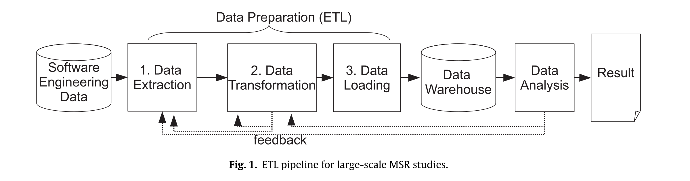
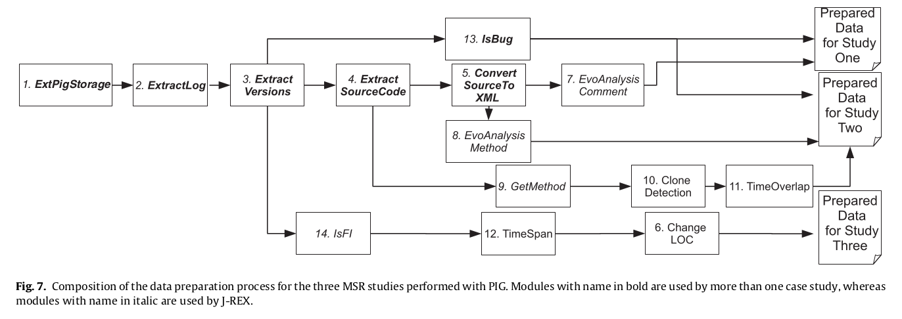

class: middle ## Using Pig as a data preparation language for large-scale mining software repositories studies: An experience report ### By Weiyi Shang, Bram Adams, and Ahmed E. Hassan ##### Presentation by Wenhan Zhu (Cosmos) --- class:middle ### Measure evolution of total number of LOC (Lines of Code) in different snapshots of a source control repository - Extract information about line of code from repositories - Transform the extrated information into LOC per snapshot - Load the result in formats that can be used for analysis  .footnote[Figure taken from paper] ??? - Extract (think git only extract lines of code by file) - Transform (think compute total LOC per snapshot) - Load (think generating a csv file by snapshot) - Iterative (think count files that doesn't matter) --- # Main contribution Introducing [Apache Pig](https://pig.apache.org) as distributed platform for MSR studies --- # Pig 1. What is Pig? Pig is a high level Hadoop-based platform for analyzing large scale of data. 2. Why Pig? - Modularity - Scalability - Ease of deploying --- #Pig example code from paper Sample code to measure evolution of LOC (Lines of Code) in a MSR study ```xml RAWDATA = load ’ $inputdata ’ using ExtPigStorage () as ( filename : chararray , filecontent : chararray ) ; HISTORYLOG = foreach RAWDATA generate ExtractLog ( filename , filecontent ) ; HISTORYVERSIONS = foreach HISTORYLOG generate ExtractVersions ( $0 ) ; CODE = foreach HISTORYVERSIONS generate ExtractSourceCode ( $0 ) ; LOC = foreach CODE generate GenLOC ( $0 ) ; dump LOC ; ``` ??? Pig Latin, removing frist consonant and adding it to the back with a suffix Pig -> igpay <pre> <code class="text hljs remark-code"> test <b>bold</b> test </code></pre> --- class:middle <pre> <code class="text hljs remark-code"> <em># Extracting Data</em> RAWDATA = <b>load</b> ’ $inputdata ’ <b>using</b> <font color="red">ExtPigStorage</font> () <b>as</b> ( <b>filename</b> : <b>chararray</b> , <b>filecontent</b> : <b>chararray</b> ) ; <em># Transforming Data</em> HISTORYLOG = <b>foreach</b> RAWDATA <b>generate</b> <font color="red">ExtractLog</font> ( <b>filename</b> , <b>filecontent</b> ) ; HISTORYVERSIONS = <b>foreach</b> HISTORYLOG <b>generate</b> <font color="red">ExtractVersions</font> ( $0 ) ; CODE = <b>foreach</b> HISTORYVERSIONS <b>generate</b> <font color="red">ExtractSourceCode</font> ( $0 ) ; LOC = <b>foreach</b> CODE <b>generate</b> <font color="red">GenLOC</font> ( $0 ) ; <em># Loading Data</em> dump LOC ; </code> </pre> --- #3 Case studies - Study 1: Correlation between comment updates and bugs - is the change related to a bug? - does the change update source code comments? - Study 2:Correlation between code clones and bugs - is the revision a bug fix? - is the method new or has it been deleted? - source code for very method - is the method cloned? - Study 3: Evolution of the complexity of source code changes - number of changed LOC in Feature Introduction Modification (FI) changes ??? **Required Data** **Implementation** All need - Load data from csv to Pig storage - Generate log data for every source code file - generate list of revision numbers and commit logs for every source code file S1,2: - Using Heuristics on commit logs to check if contains bug fix - Extract every revision of source code for every source code file - transform every snapshot of every shource code file into xml S1: - compare every two consecutive revisions of source code to check whether there is any comment change S2: - check which methods have been added or deleted in very revision of every source code file - generating every method's content - performing clone detection on the source code of all the methods - ruling out falsely reported cloned methods S3: - checking for every change whether the changes is an FI change - grouping changes per time period - counting the changed #LOC ---  `ExtPigStorage` ```bash CVSMETADATA = load ’ EclipseCvsData ’ using ExtPigStorage () as ( filename : chararray , filecontent : chararray ) ; ``` `ExtractLog` ```bash HISTORYLOG = foreach CVSMETADATA generate ExtractLog ( filename , filecontent ) ; ``` `Extract Versions` ```bash HISTORYVERSIONS = foreach HISTORYLOG generate ExtractVersions ( $0 ) ; ``` --- `IsBug` ```bash BUGCHANGES = filter HISTORYVERSIONS by IsBug { $0 }; NOBUGCHANGES = filter HISTORYVERSIONS by not IsBug { $0 }; ``` `Extract SourceCode` ```bash CODE = foreach HISTORYVERSIONS generate ExtractSourceCode ( $0 ) ; ``` `Convert SourceToXML` ```bash XMLS = foreach CODE generate ConvertSourceToX M L ( $0 ) ; ``` --- `EvoAnalysis Comment` ```bash COMMENTEVO = foreach XMLS generate EvoAnalysisComment ( $0 ) ; ``` `Prepared Data for Study One` ```bash BUGRESULT = join BUGCHANGES by $0 . $0 , COMMENTEV O by $0 . $0 ; NOBUGRESULT = join NOBUGCHANGES by $0 . $0 , COMMENTEVO by $0 . $0 ; dump BUGRESULT ; dump NOBUGRESULT ; ``` ??? Evolution analysis of comments --- class:middle # Comparison to Hadoop 1. High level 1. Running Time 2. Migration Effort 3. Modularity ??? High level - No need to worry about low level code - Less boil-plate code 50% for pig 80% for Hadoop **Running Time** 1.3 times slower than Hadoop, depends on implementation sometimes faster **Migration Effort** Migrate non distributed code to the platform **Mention about authors current work related to this:** No direct citations, but any work could easily be based on this technique --- ## Things I like: 1. Introduces a high level platform that's easy to use for speeding up data preparation 2. Nicely explained diagrams for understanding the process of software engineering research 3. Detailed demo code for others to quickly pick up Pig as a platform ## Things I would like to see improved: 1. Comparison with other ETL methods 1. Details of comparison methods between Hadoop and Pig 3. Typesetting on code segment ??? #### Details of comparison methods - Boil-plate code definition and example in Pig and Hadoop - Only J-REX which is in house tool --- class:center, middle # Discussions